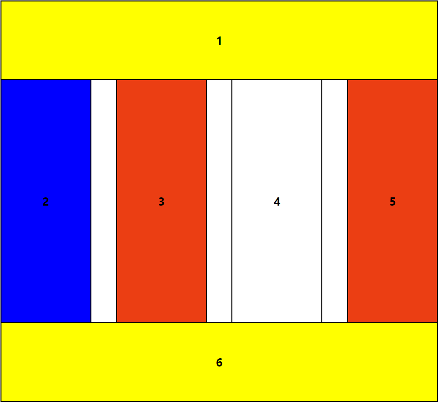
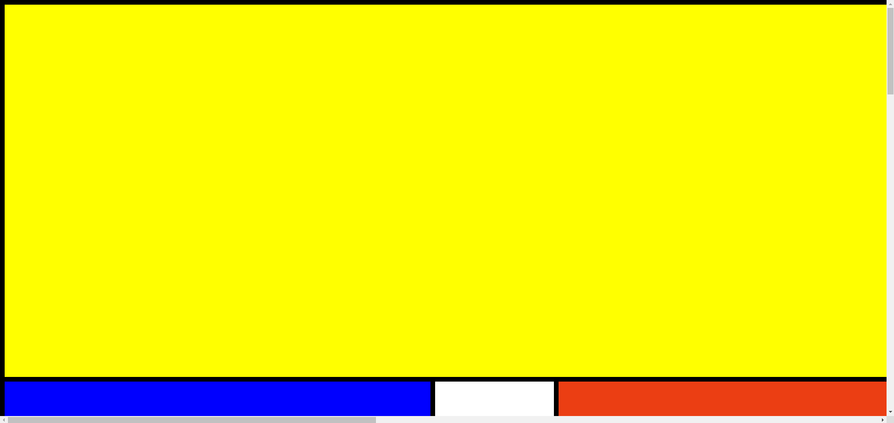

Фіксована таблична верстка
Посилання на веб-сторінку: https://shafinsky.github.io/IS-31_ShafinskyiY_Laba3/task2.1/task2.1.html
Скріншоти веб-сторінки
 Код веб-сторінки
task2.1.html
<!DOCTYPE html>
<html lang="en">
<head>
<meta charset="UTF-8">
<meta name="viewport" content="width=device-width, initial-scale=1.0">
<title>Task2.1</title>
<link rel="stylesheet" href="https://cdnjs.cloudflare.com/ajax/libs/modern-normalize/1.0.0/modern-normalize.min.css">
<link rel="stylesheet" href="./style1.css">
</head>
<body>
<header></header>
<main>
<table class="fixed-table-layout">
<tr>
<td class="element_1_6" colspan="7">
<h2 class="element_description">1</h2>
</td>
</tr>
<tr>
<td class="element2">
<h2 class="element_description">2</h2>
</td>
<td class="spacer"></td>
<td class="element_3_5">
<h2 class="element_description">3</h2>
</td>
<td class="spacer"></td>
<td class="element4">
<h2 class="element_description">4</h2>
</td>
<td class="spacer"></td>
<td class="element_3_5">
<h2 class="element_description">5</h2>
</td>
</tr>
<tr>
<td class="element_1_6" colspan="7">
<h2 class="element_description">6</h2>
</td>
</tr>
</table>
</main>
<footer></footer>
</body>
</html>
style1.css
table {
border-collapse: collapse;
}
table, td {
border: 2px solid black;
}
.fixed-table-layout {
width: 900px;
margin: 0 auto;
}
h2.element_description {
text-align: center;
color: black;
}
.element_1_6 {
height: 162px;
background-color: yellow;
width: 35px;
}
.element2,
.element4,
.element_3_5 {
width: 70px;
height: 500px;
}
.element2 {
background-color: blue;
}
.element4 {
background-color: white;
}
.element_3_5 {
background-color: rgb(235, 62, 19);
}
.spacer {
width: 20px;
background-color: transparent;
border: none;
}
Теорія
Фіксована таблична верстка — це метод організації контенту на веб-сторінці, який використовує HTML-таблиці для структурування даних у рядки та стовпці. Цей підхід часто застосовується для відображення табличних даних, таких як фінансова інформація або статистика.
Основною особливістю фіксованої верстки є можливість задавати фіксовану ширину стовпців, що забезпечує стабільний вигляд таблиці, незалежно від обсягу вмісту. Завдяки CSS можна контролювати стиль таблиці, включаючи кольори, шрифти та відступи.
Переваги фіксованої табличної верстки включають простоту використання та стабільність дизайну, оскільки ширини стовпців можуть бути заздалегідь визначені. Проте, цей підхід має свої недоліки, зокрема, відсутність гнучкості: фіксовані таблиці можуть не адаптуватися до різних розмірів екранів, що призводить до горизонтальної прокрутки. Використання таблиць для не табличних даних також може негативно вплинути на доступність і SEO(search engine optimization).
У загальному, фіксована таблична верстка залишається корисним інструментом для представлення структурованих даних, хоча сучасні методи верстки, такі як Flexbox і Grid, пропонують більше гнучкості та можливостей для дизайну.